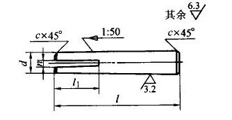

n(公称) |
l1 |
c ≈ |
l(商品规格范围) |
l系列(公称尺寸) |
0.8 |
10 |
0.5 |
30～55 |
30,32,35,40,45,50,55,60,65,70,75,80,85,90,95,100,120,140,160,180,200 |
0.8 |
10 |
0.5 |
35～60 |
|
1 |
12 |
1 |
40～80 |
|
1 |
15 |
1 |
50～100 |
|
1.6 |
20 |
1 |
60～120 |
|
1.6 |
25 |
1.5 |
70～160 |
|
2 |
30 |
1.5 |
80～120 |
|
2 |
40 |
1.5 |
100～200 |
注：
1．标记示例：
公称直径d=10mm、长度l=60mm、材料为35钢、不经热处理及表面处理的开尾锥销：
销GB/T 877 10×60
2．本表的单位是mm。